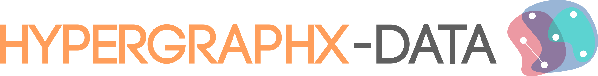

{{name}}
Description
{{description}}
Basic statistics
- Nodes: {{vertices}}
- Hyperedges: {{edges}}
- Unique hyperedges: {{unique_edges}}
- Max size hyperedge: {{max_size_edge}}
Hyperedge size distribution
Hyperdegree distribution
{{versions}}
Provenance
{{provenance}}Citation
When this data is used in published research or for visualization purposes, please cite the following:
Copied!
{{bibtex}}